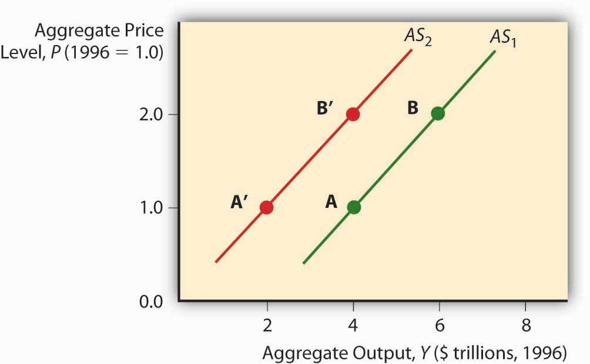
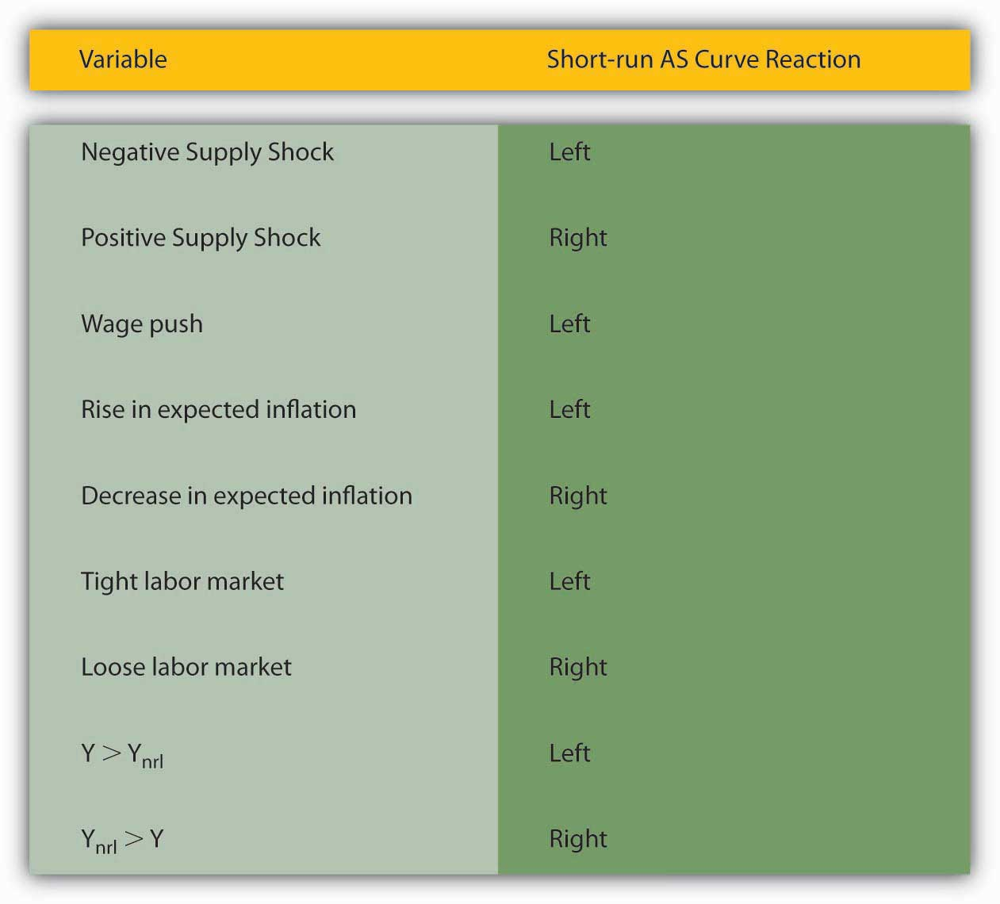

The aggregate supply curve is a tad trickier because it is believed to change over time. In the long run, it is thought to be vertical at Ynrl, the natural rate of output concept introduced earlier. In the long run, the economy can produce only so much given the state of technology, the natural rate of unemployment, and the amount of physical capital devoted to productive uses.
Figure 23.3 Short-run aggregate supply curve
In the short run, by contrast, the total value of goods and services supplied to the economy is a function of business profits, meant here simply as the price goods bear in the market minus all the costs of their production, including wages and raw material costs. Prices of final goods and services generally adjust faster than the cost of inputs like labor and raw materials, which are often “sticky” due to long-term contracts fixing their price. So as the price level rises, ceteris paribus, business profits are higher and hence businesses supply a higher quantity to the market. That is why the aggregate supply (AS) curve slopes upward in the short run, as in Figure 23.3 "Short-run aggregate supply curve".
The short-run AS curve shifts due to changes in costs and hence profits. When the labor market is tight, the wage bill rises, cutting into profits and shifting the AS curve to the left. Any so-called wage push from any source, like unionization, will have the same effect. If economic agents expect the price level to rise, that will also shift the AS curve left because they are going to demand higher wages or higher prices for their wares. Finally, changes in technology and raw materials supplies will shift the AS curve to the right or left, depending on the nature of the shock. Improved productivity (more output from the same input) is a positive shock that moves the AS curve to the right. A shortage due to bad weather, creation of a successful producer monopoly or cartel, and the like, is a negative shock that shifts the AS curve to the left.
Figure 23.4 Factors that shift the short-run aggregate supply curve
Also, whenever Y exceeds Ynrl, the AS curve shifts left. That is because when Y exceeds Ynrl, the labor market gets tighter and expectations of inflation grow. Reversing that reasoning, the AS curve shifts right whenever Ynrl exceeds Y. Figure 23.4 "Factors that shift the short-run aggregate supply curve" summarizes the discussion of the short-run AS curve.